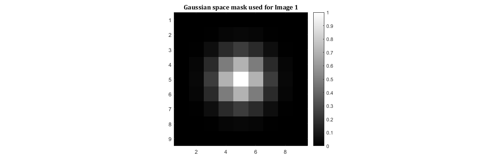
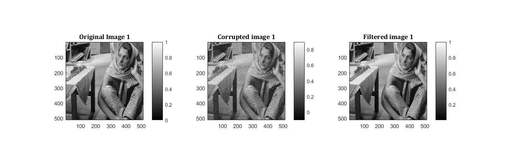
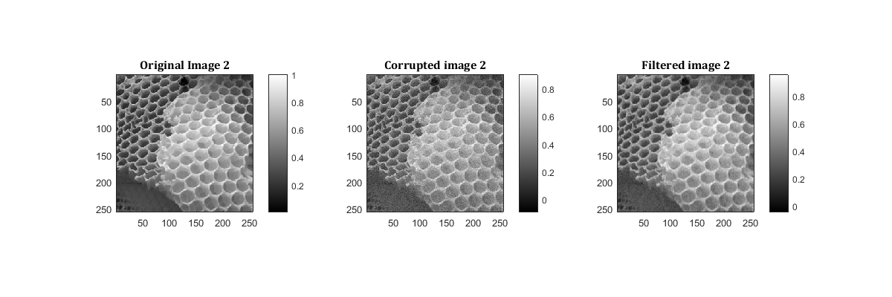
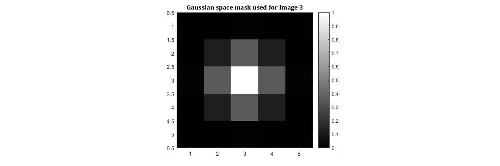
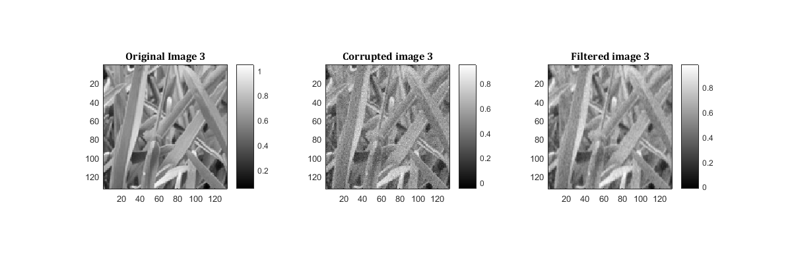

Contents
rng(42);
tic;
Processing image 1
storedStructure = load('../data/barbara.mat');
input = storedStructure.imageOrig;
[height,width] = size(input);
noise = randn(size(input));
input_noise = input + 0.05*(max(max(input)) - min(min(input)))*noise;
input_noise = input_noise/(max(max(input_noise)) - min(min(input_noise)));
output = myBilateralFiltering(input_noise,1.178,0.1720);
output = output/(max(max(output)) - min(min(output)));
input = input/(max(max(input)) - min(min(input)));
RMSD = sqrt(sum(sum((output-input).^2))/(width*height));
hsize = floor(4*1.178);
gaussian_space = fspecial('gaussian',[2*hsize+1,2*hsize+1],1.178);
Displaying mask used
my_imshow(mat2gray(gaussian_space),'Gaussian space mask used for Image 1')

Displaying images
my_imshow(input, "Original Image 1",input_noise,"Corrupted image 1",output,"Filtered image 1");

Optimal sigma_space is : 1.178 and Optimal sigma_intensity is: 0.1720, where we get optimal RSMD to be=
disp(RMSD);
0.0362
Calculating non optimal RMSD
output1 = myBilateralFiltering(input_noise,1.178*0.9,0.1720);
output1 = output1/(max(max(output1)) - min(min(output1)));
output2 = myBilateralFiltering(input_noise,1.178*1.1,0.1720);
output2 = output1/(max(max(output2)) - min(min(output2)));
output3 = myBilateralFiltering(input_noise,1.178,0.1720*0.9);
output3 = output3/(max(max(output3)) - min(min(output3)));
output4 = myBilateralFiltering(input_noise,1.178,0.1720*1.1);
output4 = output4/(max(max(output4)) - min(min(output4)));
RMSD1 = sqrt(1/(width*height)*sum(sum((output1-input).^2)));
RMSD2 = sqrt(1/(width*height)*sum(sum((output2-input).^2)));
RMSD3 = sqrt(1/(width*height)*sum(sum((output3-input).^2)));
RMSD4 = sqrt(1/(width*height)*sum(sum((output4-input).^2)));
RMSD with 0.9*sigma_space and 1*sigma_intensity
disp(RMSD1);
0.0358
RMSD with 1.1*sigma_space and 1*sigma_intensity
disp(RMSD2);
0.1270
RMSD with 1*sigma_space and 0.9*sigma_intensity
disp(RMSD3);
0.0356
RMSD with 1*sigma_space and 1.1*sigma_intensity
disp(RMSD4)
toc;
0.0377
Elapsed time is 40.254955 seconds.
Processing image 2
rng(42)
tic;
input=im2double(imread('../data/honeyCombReal.png'));
[height,width] = size(input);
noise = randn(size(input));
input_noise = input + 0.05*(max(max(input)) - min(min(input)))*noise;
input_noise = input_noise/(max(max(input_noise)) - min(min(input_noise)));
output = myBilateralFiltering(input_noise,0.7107,0.7503);
output = output/(max(max(output)) - min(min(output)));
input = input/(max(max(input)) - min(min(input)));
RMSD = sqrt(sum(sum((output-input).^2))/(width*height));
hsize = floor(4*0.7107);
gaussian_space = fspecial('gaussian',[2*hsize+1,2*hsize+1],0.7107);
Displaying mask used
my_imshow(mat2gray(gaussian_space),'Gaussian space mask used for Image 2')
Displaying images
my_imshow(input, "Original Image 2",input_noise,"Corrupted image 2",output,"Filtered image 2");

Optimal sigma_space is : 0.7107 and Optimal sigma_intensity is: 0.7503 where we get optimal RSMD to be=
disp(RMSD);
0.0416
Calculating non optimal RMSD
output1 = myBilateralFiltering(input_noise,0.7107*0.9,0.7503);
output1 = output1/(max(max(output1)) - min(min(output1)));
output2 = myBilateralFiltering(input_noise,0.7107*1.1,0.7503);
output2 = output1/(max(max(output2)) - min(min(output2)));
output3 = myBilateralFiltering(input_noise,0.7107,0.7503*0.9);
output3 = output3/(max(max(output3)) - min(min(output3)));
output4 = myBilateralFiltering(input_noise,0.7107,0.7503*1.1);
output4 = output4/(max(max(output4)) - min(min(output4)));
RMSD1 = sqrt(1/(width*height)*sum(sum((output1-input).^2)));
RMSD2 = sqrt(1/(width*height)*sum(sum((output2-input).^2)));
RMSD3 = sqrt(1/(width*height)*sum(sum((output3-input).^2)));
RMSD4 = sqrt(1/(width*height)*sum(sum((output4-input).^2)));
RMSD with 0.9*sigma_space and 1*sigma_intensity
disp(RMSD1);
0.0496
RMSD with 1.1*sigma_space and 1*sigma_intensity
disp(RMSD2);
0.0598
RMSD with 1*sigma_space and 0.9*sigma_intensity
disp(RMSD3);
0.0416
RMSD with 1*sigma_space and 1.1*sigma_intensity
disp(RMSD4)
toc;
0.0416
Elapsed time is 11.172595 seconds.
Processing image 3
rng(42)
tic;
input=im2double(imread('../data/grass.png'));
[height,width] = size(input);
noise = randn(size(input));
input_noise = input + 0.05*(max(max(input)) - min(min(input)))*noise;
input_noise = input_noise/(max(max(input_noise)) - min(min(input_noise)));
output = myBilateralFiltering(input_noise,0.693,0.86);
output = output/(max(max(output)) - min(min(output)));
input = input/(max(max(input)) - min(min(input)));
RMSD = sqrt(sum(sum((output-input).^2))/(width*height));
hsize = floor(4*0.693);
gaussian_space = fspecial('gaussian',[2*hsize+1,2*hsize+1],0.693);
Displaying mask used
my_imshow(mat2gray(gaussian_space),'Gaussian space mask used for Image 3')

Displaying images
my_imshow(input, "Original Image 3",input_noise,"Corrupted image 3",output,"Filtered image 3");

Optimal sigma_space is : 0.693 and Optimal sigma_intensity is: 0.86, where we get optimal RSMD to be=
disp(RMSD);
0.0458
Calculating non optimal RMSD
output1 = myBilateralFiltering(input_noise,0.693*0.9,0.86);
output1 = output1/(max(max(output1)) - min(min(output1)));
output2 = myBilateralFiltering(input_noise,0.693*1.1,0.86);
output2 = output1/(max(max(output2)) - min(min(output2)));
output3 = myBilateralFiltering(input_noise,0.693,0.86*0.9);
output3 = output3/(max(max(output3)) - min(min(output3)));
output4 = myBilateralFiltering(input_noise,0.693,0.86*1.1);
output4 = output4/(max(max(output4)) - min(min(output4)));
RMSD1 = sqrt(1/(width*height)*sum(sum((output1-input).^2)));
RMSD2 = sqrt(1/(width*height)*sum(sum((output2-input).^2)));
RMSD3 = sqrt(1/(width*height)*sum(sum((output3-input).^2)));
RMSD4 = sqrt(1/(width*height)*sum(sum((output4-input).^2)));
RMSD with 0.9*sigma_space and 1*sigma_intensity
disp(RMSD1);
0.0568
RMSD with 1.1*sigma_space and 1*sigma_intensity
disp(RMSD2);
0.0536
RMSD with 1*sigma_space and 0.9*sigma_intensity
disp(RMSD3);
0.0459
RMSD with 1*sigma_space and 1.1*sigma_intensity
disp(RMSD4)
toc;
0.0458
Elapsed time is 3.701163 seconds.